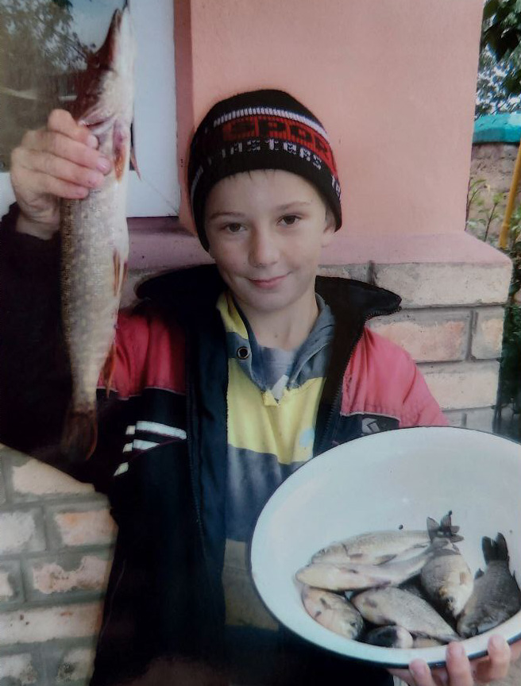
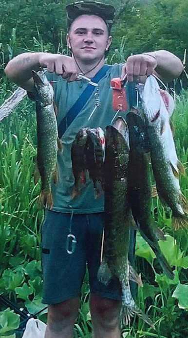

Синочку, любий мій, на моїй пам'яті несчісленна кількість різноманітних спогадів...
...Ти цілий ранок із завзяттям готуєш свої снасті, перевіряєш вудки, і я, спостерігаючи за твоєю зосередженістю,
відчуваю невимовну гордість матері - твоя старанність у всьому, що ти робиш, завжди вражає мене!
...В той день, коли ти повернувся, тримаючи цих чудових риб, твоя усмішка була такою широкою та щирою, а твої
очі сяяли від хвилювання, задоволення та радості.
Улов ти міцно тримав у руках, немов трофеї твого терпіння, майстерності та любові до природи. Я пам’ятаю, як ти
розповідав про кожну рибину, про те, як ти виловлював їх, іскра гордості в твоїх очах була значущішою за
будь-який трофей.
Пройшли роки... Ти подорослішав... Твої досвід, вміння, знання, вправність та майстерність в рибальстві ... ТИ
ПРОФІ!
Але кожного разу, коли ти повертаєшся додому, я бачу того маленького хлопчика із сяючими оченятами


Ніколи не переставай бути таким завзятим, мій дорогий. Нехай кожен твій день буде сповнений таких же яскравих
моментів, як і той літній день на річці. І нехай кожен твій успіх буде таким же багатим і повним, як і твій
улов. Ти – моє натхнення, і я вірю, що ти завжди будеш домагатися будь-чого, за що візьмешся. Якщо хочеш,
розказуй мені знову і знову про ту чи іншу свою пригоду. Я можу слухати тебе безкінечно...